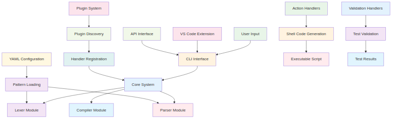

Architecture Modulaire
KnightBatch utilise une architecture modulaire moderne entièrement configurée par YAML, permettant une extensibilité maximale tout en maintenant la simplicité d'utilisation.
Vue d'Ensemble

Vue d'Ensemble Modulaire

Vue d'ensemble de l'architecture modulaire avec tous les composants principaux.
Pipeline de Compilation Détaillé

Pipeline détaillé montrant le flux de données de la compilation.
Pipeline de Compilation
1. Tokenisation
Le fichier .shtest est découpé en tokens par le lexer configurable basé sur des patterns YAML.
2. Parsing
Les tokens sont analysés par le parser modulaire pour produire un AST (arbre syntaxique).
3. Construction de l'AST
L'AST builder valide et normalise la structure selon la grammaire configurée.
4. Binding
- Le binder relie chaque validation à la bonne action (notamment pour
scope: last_action). - Résout les variables et le contexte.
- Prépare l'AST pour la génération de code.
- Pourquoi c'est important ? Sans binding, certaines validations seraient orphelines ou mal appliquées, ce qui fausserait les résultats des tests.
5. Génération de code
Le générateur de shell parcourt l'AST lié et produit un script shell exécutable.
6. Exécution
Le script shell généré peut être exécuté directement.
Composants Principaux
1. Core (core/)
- visitor.py : Pattern Visitor pour parcourir l'AST
- ast.py : Nœuds AST de base (ActionNode, ValidationNode, etc.)
- context.py : Contexte de compilation partagé
2. Lexer Modulaire (parser/lexer/)
- configurable_lexer.py : Lexer principal
- pattern_loader.py : Chargement des patterns YAML
- filters.py : Filtres de tokens
- tokenizers.py : Tokenizers spécialisés
3. Parser Modulaire (parser/)
- configurable_parser.py : Parser principal
- ast_builder.py : Constructeur d'AST avec validation
- grammar.py : Grammaire configurable
4. Compilateur Modulaire (compiler/)
- compiler.py : Compilateur principal
- visitors.py : Visiteurs pour la génération de code
- matcher_registry.py : Registre des matchers
- utils.py : Utilitaires de compilation
Système de Plugins
Architecture des Plugins
Architecture du système de plugins montrant comment les plugins s'intègrent dans le pipeline principal.
Les plugins sont organisés dans plugins/ et peuvent étendre :
- Action Handlers : Nouvelles actions personnalisées
- Validation Handlers : Nouvelles validations
- Patterns YAML : Nouveaux patterns de reconnaissance
- Handler Requirements : Documentation des paramètres
Structure d'un Plugin
Structure typique d'un plugin montrant l'organisation des fichiers et dossiers.
src/shtest_compiler/plugins/example_plugin/
├── __init__.py
├── config/
│ ├── patterns_actions.yml
│ ├── patterns_validations.yml
│ └── handler_requirements.yml
├── action_handlers/
│ ├── __init__.py
│ └── create_example_file.py
└── handlers/
├── __init__.py
└── example_file_exists.py
Chargement Automatique des Plugins
from shtest_compiler.command_loader import discover_plugins, build_registry
# Découverte automatique des plugins
plugins = discover_plugins()
# Construction du registre avec tous les plugins
handler_registry, all_actions, all_validations = build_registry()
Création d'un Plugin
# action_handlers/my_action.py
from shtest_compiler.ast.shell_framework_ast import ActionNode
class MyAction(ActionNode):
def __init__(self, param1, param2):
self.param1 = param1
self.param2 = param2
def to_shell(self):
return f"echo '{self.param1} {self.param2}' > output.txt"
def handle(params):
param1 = params.get("param1")
param2 = params.get("param2", "default")
return MyAction(param1, param2)
# config/patterns_actions.yml
actions:
- phrase: "Mon action {param1}"
handler: my_action
aliases:
- "mon action {param1}"
- "^mon action (.+)$"
Configuration YAML
Patterns d'Actions
# config/patterns_actions.yml
actions:
- phrase: "Créer le fichier {path}"
handler: create_file
aliases:
- "créer un fichier {path}"
- "faire un fichier {path}"
- "^touch (.+)$"
Patterns de Validations
# config/patterns_validations.yml
validations:
- phrase: "Le fichier {file} existe"
handler: file_exists
scope: global
aliases:
- "le fichier {file} existe"
- "^le fichier (.+) existe$"
Requirements des Handlers
# config/handler_requirements.yml
create_file:
description: "Creates a new file"
params:
- name: path
type: str
required: true
description: "Path to the file to create"
file_exists:
description: "Checks if a file exists"
params:
- name: file
type: str
required: true
description: "Path to the file to check"
Extensibilité
Pattern des Handlers

Flux de données montrant comment les paramètres passent des patterns YAML aux handlers.
Ajouter un Nouveau Type de Token
# Dans config/patterns_hybrid.yml
tokens:
custom_token:
pattern: "MonPattern:\\s*(.+)"
type: "CUSTOM_TOKEN"
priority: 5
Ajouter un Nouveau Handler
# action_handlers/custom_handler.py
from shtest_compiler.ast.shell_framework_ast import ActionNode
class CustomAction(ActionNode):
def __init__(self, param):
self.param = param
def to_shell(self):
return f"custom_command '{self.param}'"
def handle(params):
param = params.get("param")
return CustomAction(param)
Ajouter une Nouvelle Validation
# handlers/custom_validation.py
from shtest_compiler.ast.shell_framework_ast import ValidationCheck
def handle(params):
param = params.get("param")
actual_cmd = f"""# Custom validation
if [ -f "{param}" ]; then
echo "Validation successful"
exit 0
else
echo "Validation failed" >&2
exit 1
fi"""
return ValidationCheck(
expected=f"Custom validation {param}",
actual_cmd=actual_cmd,
handler="custom_validation",
scope="last_action",
params={"param": param}
)
Validation et Debug
Validation AST
class CustomASTBuilder(ASTBuilder):
def __init__(self):
super().__init__()
self.validator.add_validator(self._validate_custom_rules)
def _validate_custom_rules(self, ast):
errors = []
# Votre logique de validation personnalisée
return errors
Debug des Plugins
# Activer le debug pour les plugins
import logging
logging.basicConfig(level=logging.DEBUG)
# Vérifier la découverte des plugins
from shtest_compiler.command_loader import discover_plugins
plugins = discover_plugins()
print("Plugins trouvés:", plugins)
Performance
Optimisations
- Cache des patterns : Les patterns YAML sont compilés et mis en cache
- Lazy loading : Les plugins sont chargés à la demande
- Validation optimisée : Validation AST en une seule passe
- Génération efficace : Génération de code optimisée
Monitoring
# Profilage des performances
import time
from shtest_compiler.compiler.compiler import ModularCompiler
start_time = time.time()
compiler = ModularCompiler()
result = compiler.compile_file("test.shtest")
end_time = time.time()
print(f"Compilation time: {end_time - start_time:.2f}s")
Migration depuis l'Ancienne Architecture
Changements Principaux
- Context → Params : Les handlers reçoivent maintenant
paramsau lieu decontext - String → ActionNode : Les actions retournent des objets
ActionNodeau lieu de chaînes - Matchers → Handlers : Les validations utilisent des handlers au lieu de matchers
- YAML Structure : Nouvelle structure YAML avec
phrase/handler/aliases
Guide de Migration
# Ancien code
def old_handler(context, param):
return f"echo '{param}' > output.txt"
# Nouveau code
from shtest_compiler.ast.shell_framework_ast import ActionNode
class NewAction(ActionNode):
def __init__(self, param):
self.param = param
def to_shell(self):
return f"echo '{self.param}' > output.txt"
def handle(params):
param = params.get("param")
return NewAction(param)
Conclusion
L'architecture modulaire de KnightBatch offre une extensibilité maximale tout en maintenant la simplicité d'utilisation. Le système de plugins permet d'ajouter facilement de nouvelles fonctionnalités sans modifier le code principal.
Pour plus d'informations, consultez : - Guide Développeur - Créer un Plugin - Tests et Validation